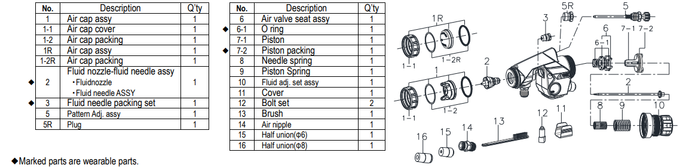
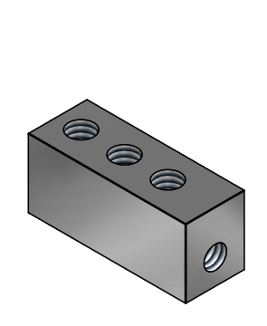
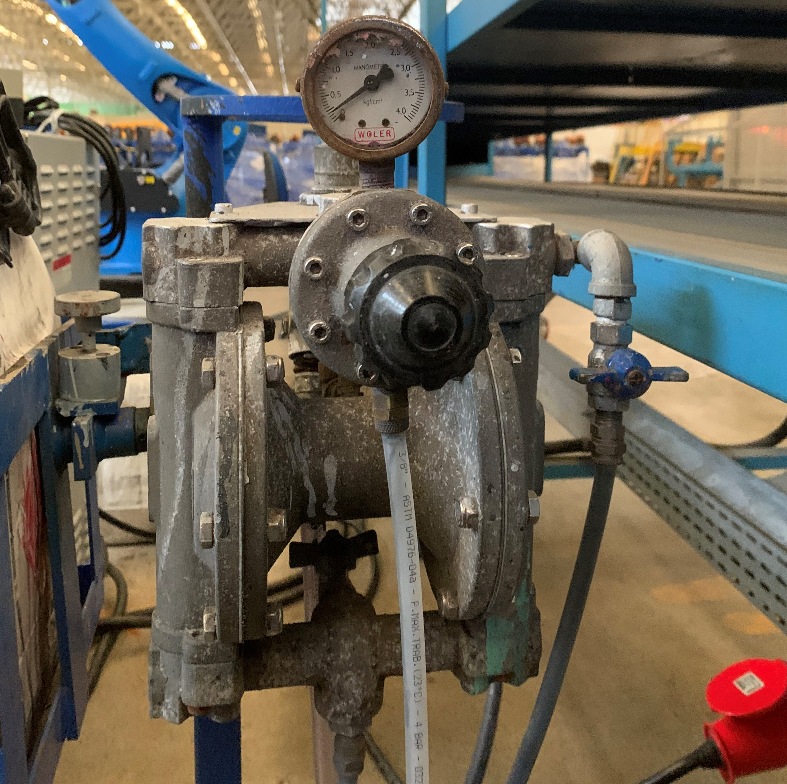
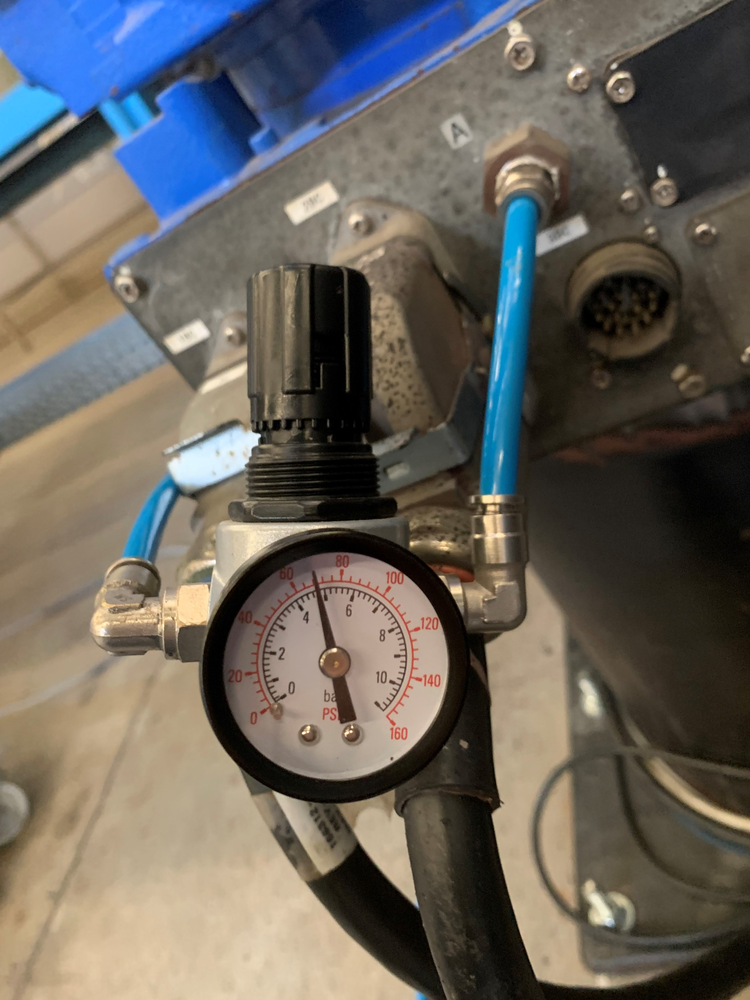

Componentes do Robô Yaskawa Motoman de Pintura
Nesta sessão estão relacionados os componentes Do Robô Yaskawa Motoman de Pintura e seus detalhes.
Nesta sessão estão relacionados os componentes Do Robô Yaskawa Motoman de Pintura e seus detalhes.

A pistola de pintura utilizada no robô de pintura é o modelo automático Wider1A-08E2P, equipada com um bico de 0,8 mm e ativado por acionamento pneumático. Esta pistola apresenta três entradas, sendo duas localizadas na parte superior para entrada e retorno de ar, e uma lateral destinada ao suprimento de tinta. Possui ajustes para pressão de tinta e configuração do leque de pintura, permitindo a aplicação de diversas formas de pintura de maneira adequada.
O almoxarifado da GI possui sete pistolas de pintura, duas dessas estão codificadas e as outras se encontraram no deposito.
O Poka-yoke é um conceito de engenharia desenvolvido para prevenir erros humanos em processos industriais.
Não há grandes defeitos ou dificuldades significativas em sua operação, requerendo apenas limpeza periódica em sua cobertura de tinta, realizada durante os TRF's e trocas de turno.
O bloco de troca de cor consiste em um conjunto composto por duas válvulas pneumáticas, cada qual ativada por um solenoide. Estas válvulas são alimentadas por duas cores distintas, porém possuem uma saída interligada em Y com a mangueira de alimentação da pistola. Seu funcionamento se baseia no princípio de seleção da cor a ser utilizada, operado por meio de uma chave de duas posições que ativa o solenoide correspondente, liberando assim a cor selecionada para a pistola.
Clique Aqui para abrir o desenho
É fundamental manter disponível pelo menos um bloco de troca de cor reserva para cada robô em operação, visando prevenir possíveis paralisações prolongadas na atividade produtiva devido a falhas nesse equipamento.
A Bomba de Tinta é o instrumento responsável pela alimentação das pistolas no processo de pintura das solas.
Os reguladores têm a finalidade de gerenciar a vazão e pressão do fluxo de tinta que abastece as pistolas do Robô de pintura. São compostos por dois reguladores de pressão de ar comprimido, um para cada pistola, além de um regulador de tinta integrado à bomba de tinta. A adequada calibração destes reguladores é crucial para otimizar a qualidade da pintura realizada.
O sistema de exaustão é empregado para a eliminação do excesso de partículas de tinta em forma de pó da cabine de pintura do robô, prevenindo o acúmulo excessivo de resíduos na esteira.
Apresentou questões relacionadas à alta pressão e proximidade com a esteira, resultando no incidente de sucção de três solas pela mesma.
Deve ser reproduzida em outras esteiras que contêm robô de pintura quando demonstrar consistência e operar conforme o desejado.
Trata-se de uma capa feita de nylon especificamente para o robô de pintura Yaskawa Motoman MH12, projetada para prevenir a acumulação de tinta ou resíduos em sua estrutura, visando evitar danos nos componentes ou oxidação devido à presença de solventes utilizados na tinta.
No almoxarifado na gestão da inovação existem 14 unidades em estoque.
O custo individual da capa de proteção e nylon é de R$ 1500,00.